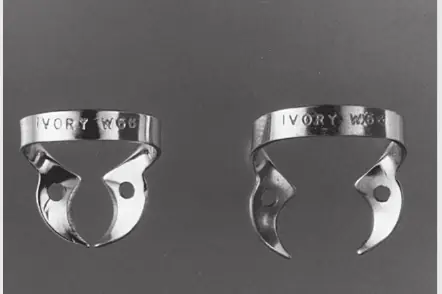

نسخه استخراجشده؛ ترجمه یا تأیید علمی انجام نشده است. وضعیت: captured
برای ترمیم کلاس II مولر اول پایین، دانشجو کلمپی کوچکتر از دندان برداشته و فکهایش را با فورسپس تا ته باز کرده تا از تاج رد شود. کلمپ روی دندان تکان میخورد و لثهی لینگوال زیر فک بریده و خونی شده است. چند خطا میبینی؟

خطا در گذاشتن یا برداشتن رابردم سه پیامد دارد: کنترل ناکافی رطوبت، دید و دسترسی کمتر، و آسیب به بیمار. بسیاری از این خطاها از کلمپ شروع میشوند.
کلمپ درست با تماس پایدار چهار نقطه روی دندان مینشیند و جای وج را نمیگیرد. اگر کلمپ فقط بهزور از تاج رد میشود، اندازهی بزرگتر را امتحان کن.
برای هر خطا: مشکل، علت و راهحل.
نکتهی طلایی: بیشتر این خطاها با یک وارسی کوتاه پیش از شروع کار گرفته میشوند: کلمپ پایدار و بیآسیب به لثه، ورق سالم، بینی آزاد و سر فریم دور از چشم. پیش از برداشتن هم لیگاتورها و خردهها را فراموش نکن.